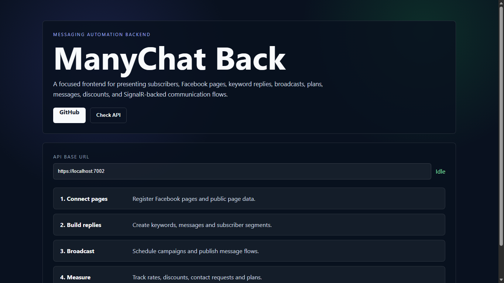

ManyChat Back
Messaging automation backend
ASP.NET Core backend for Facebook pages, subscribers, keyword replies, messages, broadcasts, plans, discounts, contact requests, SignalR messaging and Redis services.
1. Contexte du projet
The backend supports a chatbot/social automation workflow. The frontend dashboard summarizes the main API flow from connecting pages to measuring campaigns.
2. Objectifs
- Facebook page management
- Subscribers
- Keyword replies
- Broadcast scheduling
- SignalR hub
- Redis-ready services
3. Acteurs
- Administrator
- Page owner
- Subscriber
- Marketing operator
4. Interfaces et fonctions principales
| Frontend API dashboard | Explains connect pages, build replies, broadcast and measure workflow. |
| Facebook pages | Connect and manage pages attached to users. |
| Subscribers | Store subscriber information and connect them to messaging workflows. |
| Keyword replies/messages | Create automated replies and content for conversations. |
| Broadcasts | Schedule and send campaigns with background services. |
| Real-time messaging | SignalR hub for messaging updates. |
5. Technologies utilisees
ASP.NET Core 9SignalREntity Framework CoreSQL ServerRedisCQRS-style handlers
6. Travail en equipe / collaboration
Collaboration project: pushed to the team branch. The portfolio wording emphasizes backend contribution inside a shared codebase.
7. Capture d'ecran reelle

8. Liens
Repository: Private/team repository access
Demo: Static frontend prepared locally; Vercel deployment requires account login.